Introduction to modelling with sdmTMB
2026-10-10
Source:vignettes/articles/basic-intro.Rmd
basic-intro.RmdIf the code in this vignette has not been evaluated, a rendered version is available on the documentation site under ‘Articles’.
Why spatial models?
Observations collected close together in space tend to be more similar than observations far apart. Nearby sites share habitat, environmental conditions, and other factors we often haven’t measured. A standard GLM assumes every observation is independent, so it treats 10 nearby samples as 10 independent pieces of information when they may carry much less. The result is standard errors that are too small and conclusions that are more confident than the data support.
sdmTMB deals with this by adding spatial random fields to a GLM or GLMM. A random field is a smooth, estimated surface that captures spatial patterns your covariates don’t explain. In this article, we will:
- look at the data,
- fit a non-spatial model as a baseline,
- add a spatial random field and see what changes,
- add spatiotemporal random fields,
- switch to modelling biomass density,
- check the model,
- predict and map the results, and
- plot covariate effects.
The data
We will use built-in data for Pacific cod from a fisheries-independent trawl survey. Each row is one survey tow (sampling event):
-
densityis biomass density in kg/km2 (catch divided by the area swept by the trawl). -
presentis 1 if any Pacific cod were caught and 0 otherwise. -
XandYare coordinates in UTM zone 9, in km. You can add UTM columns to your own data withadd_utm_columns(). -
depthis depth in meters. -
depth_scaledis log(depth), centered at its mean and divided by its standard deviation. Working on the log scale reflects that a 10 m change matters more in shallow water than in deep water. Scaling keeps coefficients a reasonable size, and a 1-unit change indepth_scaledis a 1-SD change in log depth.
Before fitting anything, it helps to look at the data:
ggplot(pcod, aes(X, Y, col = density)) +
geom_point() +
coord_fixed() +
scale_colour_viridis_c(trans = "sqrt") +
labs(colour = "Density", title = "Observed survey tows")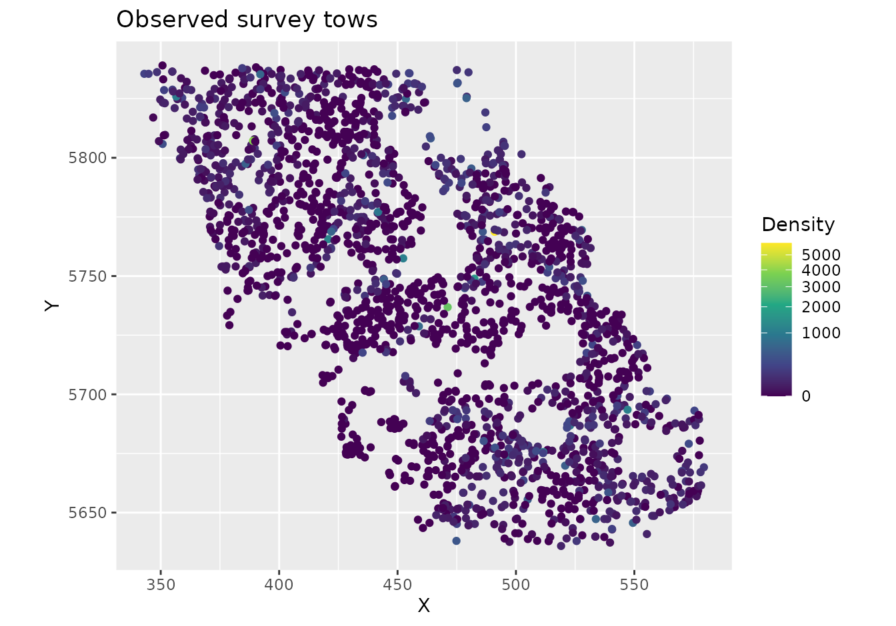
glimpse(pcod)
#> Rows: 2,143
#> Columns: 12
#> $ year <int> 2003, 2003, 2003, 2003, 2003, 2003, 2003, 2003, 2003, 20…
#> $ X <dbl> 446.4752, 446.4594, 448.5987, 436.9157, 420.6101, 417.71…
#> $ Y <dbl> 5793.426, 5800.136, 5801.687, 5802.305, 5771.055, 5772.2…
#> $ depth <dbl> 201, 212, 220, 197, 256, 293, 410, 387, 285, 270, 381, 1…
#> $ density <dbl> 113.138476, 41.704922, 0.000000, 15.706138, 0.000000, 0.…
#> $ present <dbl> 1, 1, 0, 1, 0, 0, 0, 0, 0, 1, 0, 0, 0, 0, 0, 0, 0, 0, 0,…
#> $ lat <dbl> 52.28858, 52.34890, 52.36305, 52.36738, 52.08437, 52.094…
#> $ lon <dbl> -129.7847, -129.7860, -129.7549, -129.9265, -130.1586, -…
#> $ depth_mean <dbl> 5.155194, 5.155194, 5.155194, 5.155194, 5.155194, 5.1551…
#> $ depth_sd <dbl> 0.4448783, 0.4448783, 0.4448783, 0.4448783, 0.4448783, 0…
#> $ depth_scaled <dbl> 0.3329252, 0.4526914, 0.5359529, 0.2877417, 0.8766077, 1…
#> $ depth_scaled2 <dbl> 0.11083919, 0.20492947, 0.28724555, 0.08279527, 0.768440…Notice that high and low densities cluster in space. This clustering is what spatial random fields will capture.
A non-spatial baseline
We’ll start with a logistic regression of whether Pacific cod were
caught (present) as a function of depth. We include depth
and depth squared (I(depth_scaled^2)) so that the
probability of catching cod can peak at intermediate depths. With
spatial = "off", sdmTMB() fits a standard
GLM:
m <- sdmTMB(
present ~ depth_scaled + I(depth_scaled^2),
data = pcod,
family = binomial(link = "logit"),
spatial = "off"
)
m
#> Model fit by ML ['sdmTMB']
#> Formula: present ~ depth_scaled + I(depth_scaled^2)
#> Mesh: (isotropic covariance)
#> Data: pcod
#> Family: binomial(link = 'logit')
#>
#> Conditional model:
#> coef.est coef.se
#> (Intercept) 0.57 0.06
#> depth_scaled -1.04 0.07
#> I(depth_scaled^2) -0.99 0.06
#>
#> ML criterion at convergence: 1193.035
#>
#> See ?tidy.sdmTMB to extract these values as a data frame.For comparison, here’s the same model with glm():
m0 <- glm(
present ~ depth_scaled + I(depth_scaled^2),
data = pcod,
family = binomial(link = "logit")
)
summary(m0)
#>
#> Call:
#> glm(formula = present ~ depth_scaled + I(depth_scaled^2), family = binomial(link = "logit"),
#> data = pcod)
#>
#> Coefficients:
#> Estimate Std. Error z value Pr(>|z|)
#> (Intercept) 0.56599 0.05979 9.467 <2e-16 ***
#> depth_scaled -1.03590 0.07266 -14.258 <2e-16 ***
#> I(depth_scaled^2) -0.99259 0.06066 -16.363 <2e-16 ***
#> ---
#> Signif. codes: 0 '***' 0.001 '**' 0.01 '*' 0.05 '.' 0.1 ' ' 1
#>
#> (Dispersion parameter for binomial family taken to be 1)
#>
#> Null deviance: 2958.4 on 2142 degrees of freedom
#> Residual deviance: 2386.1 on 2140 degrees of freedom
#> AIC: 2392.1
#>
#> Number of Fisher Scoring iterations: 5The parameter estimates and standard errors are the same. The negative quadratic term means the probability of catching cod rises and then falls with depth. Because we used a logit link, the coefficients are on the log-odds scale.
Adding a spatial random field
The mesh
To include a spatial random field, sdmTMB needs a mesh: a network of triangles covering the study area. The random field is estimated at the mesh vertices (corners of the triangles) and interpolated between them.
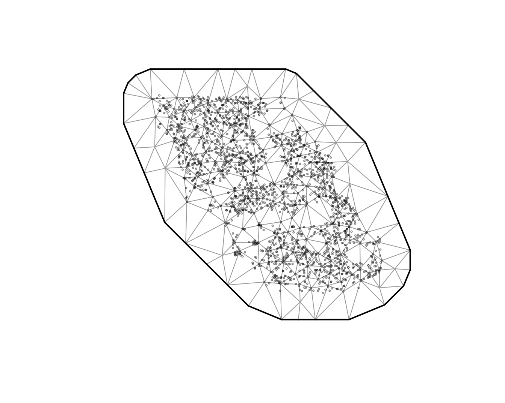
The circles are observations and the triangle corners are the mesh
vertices. cutoff is the minimum distance between vertices,
in the units of X and Y (here, km). Smaller
values give a finer mesh that can capture finer spatial patterns but is
slower to fit. A good approach is to start with a relatively coarse mesh
and then check whether a finer mesh changes your conclusions. See
?make_mesh for other ways to build a mesh.
Fitting the model
Now we fit the same model with spatial = "on" and our
mesh:
m1 <- sdmTMB(
present ~ depth_scaled + I(depth_scaled^2),
data = pcod,
mesh = mesh,
family = binomial(link = "logit"),
spatial = "on"
)It’s a good habit to run sanity() after fitting any
model. It checks for common convergence and estimation problems:
sanity(m1)
#> ✔ Non-linear minimizer suggests successful convergence
#> ✔ Hessian matrix is positive definite
#> ✔ No extreme or very small eigenvalues detected
#> ✔ No gradients with respect to fixed effects are >= 0.001
#> ✔ No fixed-effect standard errors are NA
#> ✔ No standard errors look unreasonably large
#> ✔ No sigma parameters are < 0.01
#> ✔ No sigma parameters are > 100
#> ✔ Range parameter doesn't look unreasonably large
m1
#> Spatial model fit by ML ['sdmTMB']
#> Formula: present ~ depth_scaled + I(depth_scaled^2)
#> Mesh: mesh (isotropic covariance)
#> Data: pcod
#> Family: binomial(link = 'logit')
#>
#> Conditional model:
#> coef.est coef.se
#> (Intercept) 1.14 0.44
#> depth_scaled -2.17 0.21
#> I(depth_scaled^2) -1.59 0.13
#>
#> Matérn range: 43.54
#> Spatial SD: 1.65
#> ML criterion at convergence: 1042.157
#>
#> See ?tidy.sdmTMB to extract these values as a data frame.Two new parameters appear in the output:
-
Matérn range: the distance at which two locations are effectively independent (about 13% correlated). Here, locations more than about 40 km apart have little spatial correlation. -
Spatial SD(sigma_O, for “omega”): how much the spatial random field varies. Larger values mean more spatial variation that depth doesn’t explain. Here, it is on the logit scale.
What changed?
Let’s compare the depth coefficients with and without the spatial field:
coefs <- bind_rows(
mutate(tidy(m), model = "Non-spatial"),
mutate(tidy(m1), model = "Spatial")
)
ggplot(coefs, aes(estimate, term, colour = model)) +
geom_pointrange(aes(xmin = conf.low, xmax = conf.high),
position = position_dodge(width = 0.4)) +
geom_vline(xintercept = 0, lty = 2) +
labs(x = "Estimate (log odds)", y = NULL, colour = NULL)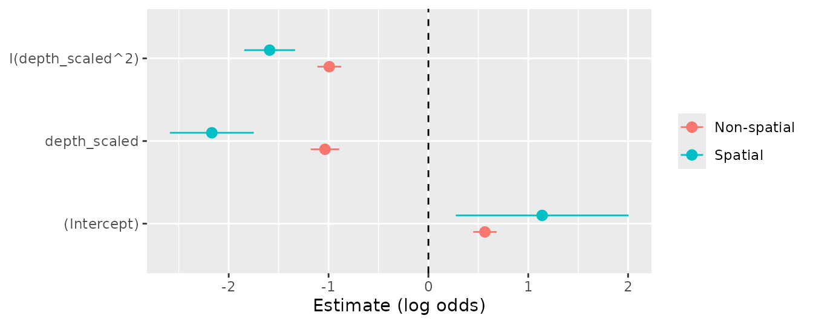
The confidence intervals are much wider with the spatial random field. The non-spatial model treated nearby tows as independent and was overconfident. The estimates themselves also changed. Here, the depth effect became stronger (a more peaked curve), but estimates can shift in either direction once spatial correlation is accounted for.
We can also compare the models with AIC (lower is better):
AIC(m, m1)
#> df AIC
#> m 3 2392.070
#> m1 5 2094.314The spatial model is strongly favoured.
Under the hood: The random field is a Gaussian random field with a Matérn covariance function. sdmTMB uses the SPDE approach (Lindgren et al. 2011) to approximate it with a Gaussian Markov random field on the mesh vertices. This is what makes the models fast to fit. See the model description for the equations.
Adding spatiotemporal random fields
The spatial random field is constant through time. It captures
persistent spatial patterns, such as areas that always have
high density. To also capture patterns that change from year to year, we
add spatiotemporal random fields. This needs a
time argument naming the column with the time step and a
choice of how the fields are related through time:
-
"iid": each year’s field is independent; -
"ar1": each year’s field is correlated with the previous year’s; -
"rw": each year’s field is the previous year’s field plus a random change (a random walk).
We’ll use "iid", which is a simple starting point. The
"ar1" and "rw" options assume evenly spaced
time steps, so with this survey (which was not run every year) we would
need to fill in the missing years with the extra_time
argument.
m2 <- sdmTMB(
present ~ depth_scaled + I(depth_scaled^2),
data = pcod,
mesh = mesh,
family = binomial(link = "logit"),
spatial = "on",
time = "year",
spatiotemporal = "iid"
)
sanity(m2)
#> ✔ Non-linear minimizer suggests successful convergence
#> ✔ Hessian matrix is positive definite
#> ✔ No extreme or very small eigenvalues detected
#> ✔ No gradients with respect to fixed effects are >= 0.001
#> ✔ No fixed-effect standard errors are NA
#> ✔ No standard errors look unreasonably large
#> ✔ No sigma parameters are < 0.01
#> ✔ No sigma parameters are > 100
#> ✔ Range parameter doesn't look unreasonably large
m2
#> Spatiotemporal model fit by ML ['sdmTMB']
#> Formula: present ~ depth_scaled + I(depth_scaled^2)
#> Mesh: mesh (isotropic covariance)
#> Time column: year
#> Data: pcod
#> Family: binomial(link = 'logit')
#>
#> Conditional model:
#> coef.est coef.se
#> (Intercept) 1.37 0.58
#> depth_scaled -2.47 0.25
#> I(depth_scaled^2) -1.83 0.15
#>
#> Matérn range: 49.96
#> Spatial SD: 1.91
#> Spatiotemporal IID SD: 0.95
#> ML criterion at convergence: 1014.753
#>
#> See ?tidy.sdmTMB to extract these values as a data frame.The new parameter is Spatiotemporal IID SD
(sigma_E, for “epsilon”): how much the spatial pattern
varies from year to year beyond the persistent spatial field.
AIC(m1, m2)
#> df AIC
#> m1 5 2094.314
#> m2 6 2041.506Modelling biomass density
So far we’ve modelled presence or absence. Often we’re more interested in biomass density, which is continuous but has many exact zeros (tows that caught nothing). The Tweedie distribution handles this kind of data. We keep the same covariates and random fields and change only the response and family:
m3 <- sdmTMB(
density ~ depth_scaled + I(depth_scaled^2),
data = pcod,
mesh = mesh,
family = tweedie(link = "log"),
spatial = "on",
time = "year",
spatiotemporal = "iid"
)
sanity(m3)
#> ✔ Non-linear minimizer suggests successful convergence
#> ✔ Hessian matrix is positive definite
#> ✔ No extreme or very small eigenvalues detected
#> ✔ No gradients with respect to fixed effects are >= 0.001
#> ✔ No fixed-effect standard errors are NA
#> ✔ No standard errors look unreasonably large
#> ✔ No sigma parameters are < 0.01
#> ✔ No sigma parameters are > 100
#> ✔ Range parameter doesn't look unreasonably large
m3
#> Spatiotemporal model fit by ML ['sdmTMB']
#> Formula: density ~ depth_scaled + I(depth_scaled^2)
#> Mesh: mesh (isotropic covariance)
#> Time column: year
#> Data: pcod
#> Family: tweedie(link = 'log')
#>
#> Conditional model:
#> coef.est coef.se
#> (Intercept) 3.29 0.21
#> depth_scaled -1.91 0.15
#> I(depth_scaled^2) -1.43 0.09
#>
#> Dispersion parameter: 11.03
#> Tweedie p: 1.50
#> Matérn range: 19.75
#> Spatial SD: 1.40
#> Spatiotemporal IID SD: 1.55
#> ML criterion at convergence: 6277.624
#>
#> See ?tidy.sdmTMB to extract these values as a data frame.We can get the estimates and confidence intervals as data frames with
tidy(). With a log link, exponentiating a coefficient gives
the multiplicative change in density for a 1-unit change in the
covariate:
tidy(m3)
#> # A tibble: 3 × 5
#> term estimate std.error conf.low conf.high
#> <chr> <dbl> <dbl> <dbl> <dbl>
#> 1 (Intercept) 3.29 0.210 2.88 3.70
#> 2 depth_scaled -1.91 0.151 -2.21 -1.62
#> 3 I(depth_scaled^2) -1.43 0.0888 -1.61 -1.26And for the random field and observation parameters:
tidy(m3, "ran_pars")
#> # A tibble: 5 × 5
#> term estimate std.error conf.low conf.high
#> <chr> <dbl> <dbl> <dbl> <dbl>
#> 1 range 19.8 3.03 14.6 26.7
#> 2 phi 11.0 0.377 10.3 11.8
#> 3 sigma_O 1.40 0.162 1.12 1.76
#> 4 sigma_E 1.55 0.129 1.32 1.83
#> 5 tweedie_p 1.50 0.0119 1.48 1.52We’ve seen range, sigma_O, and
sigma_E already. The Tweedie distribution adds two
parameters:
-
phi: the dispersion parameter, which controls how variable observations are around the mean. -
tweedie_p: the power parameter, between 1 and 2. Values closer to 1 behave more like a Poisson distribution and values closer to 2 behave more like a gamma distribution.
By default, the spatial and spatiotemporal fields share the same
range. Set share_range = FALSE to estimate them separately.
If we had used AR1 spatiotemporal fields, we would also see
rho, the correlation between years (between -1 and 1).
Checking the model
sanity() checks that the model converged, but not
whether it fits the data well. For that, we look at residuals.
Randomized quantile residuals should be approximately normally
distributed with mean 0 and standard deviation 1 if the model is
consistent with the data:
set.seed(1)
pcod$resids <- residuals(m3, type = "mle-mvn") # randomized quantile residuals
qqnorm(pcod$resids)
abline(0, 1)
ggplot(pcod, aes(X, Y, col = resids)) +
scale_colour_gradient2() +
geom_point() +
facet_wrap(~year) +
coord_fixed()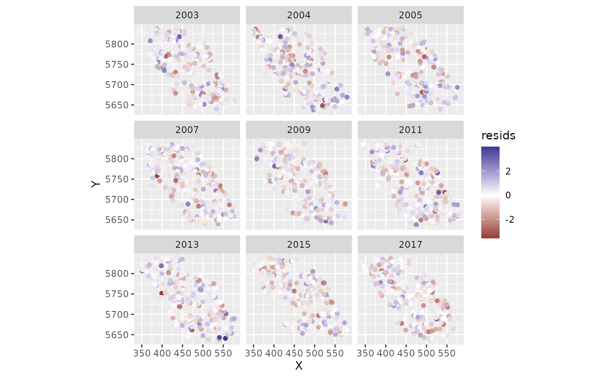
Look for an approximately straight line in the QQ plot and no large patches of positive or negative residuals in the maps. Strong spatial patterns suggest missing covariates, a misspecified model, or a mesh that is too coarse.
We can also use simulation-based residuals with the DHARMa package:
set.seed(19283)
s <- simulate(m3, nsim = 300, type = "mle-mvn")
dharma_residuals(s, m3)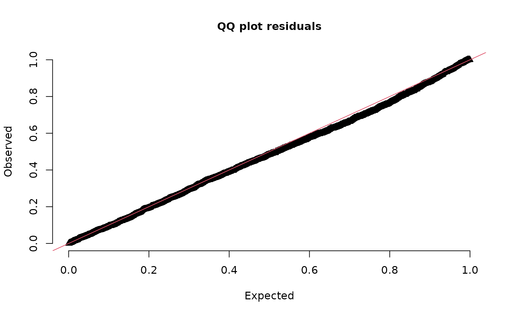
See ?residuals.sdmTMB() and the residual
checking article.
Predicting and mapping
To make maps, we predict on a grid covering the whole survey area.
The package includes a grid for this survey, qcs_grid, with
2 x 2 km cells. The grid needs every covariate used in the model. See this
discussion for suggestions on making your own grid.
glimpse(qcs_grid)
#> Rows: 7,314
#> Columns: 5
#> $ X <dbl> 456, 458, 460, 462, 464, 466, 468, 470, 472, 474, 476, 4…
#> $ Y <dbl> 5636, 5636, 5636, 5636, 5636, 5636, 5636, 5636, 5636, 56…
#> $ depth <dbl> 347.08345, 223.33479, 203.74085, 183.29868, 182.99983, 1…
#> $ depth_scaled <dbl> 1.56081222, 0.56976988, 0.36336929, 0.12570465, 0.122036…
#> $ depth_scaled2 <dbl> 2.436134794, 0.324637712, 0.132037240, 0.015801659, 0.01…Our model has spatiotemporal fields, so we need a copy of the grid for each year:
grid_yrs <- replicate_df(qcs_grid, "year", unique(pcod$year))Now we predict on the new data:
predictions <- predict(m3, newdata = grid_yrs)Let’s make a small function to help make maps.
plot_map <- function(dat, column) {
ggplot(dat, aes(X, Y, fill = {{ column }})) +
geom_raster() +
coord_fixed()
}The {{ }} syntax is a “tidy-eval
helper” that lets us pass an unquoted column name to ggplot.
The parts of a prediction
The prediction is the sum of several parts, all on the link scale (here, log):
est = est_non_rf + omega_s + epsilon_st-
est_non_rf: the part from the fixed effects (here, depth); -
omega_s: the spatial random field (persistent spatial patterns); -
epsilon_st: the spatiotemporal random fields (year-specific patterns); -
est_rf: the two random field parts combined (omega_s + epsilon_st); -
est: the full prediction, which is usually what you want for maps.
We can check that the parts add up:
all.equal(
predictions$est,
predictions$est_non_rf + predictions$omega_s + predictions$epsilon_st
)
#> [1] TRUEFirst, the full predictions. We use exp() to convert
from the log scale to biomass density:
plot_map(predictions, exp(est)) +
scale_fill_viridis_c(
trans = "sqrt",
# trim extreme high values to make spatial variation more visible:
na.value = "yellow", limits = c(0, quantile(exp(predictions$est), 0.995))
) +
facet_wrap(~year) +
ggtitle("Prediction (fixed effects + all random effects)",
subtitle = paste("maximum estimated biomass density =", round(max(exp(predictions$est))))
)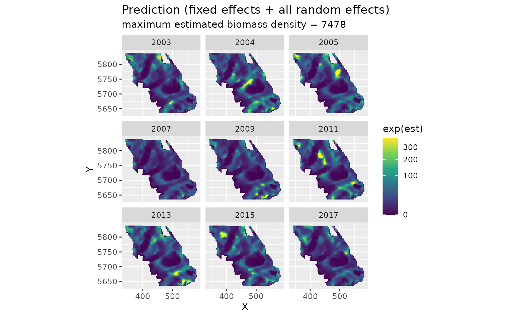
The fixed effects only (depth). This is the same every year:
plot_map(predictions, exp(est_non_rf)) +
scale_fill_viridis_c(trans = "sqrt") +
ggtitle("Prediction (fixed effects only)")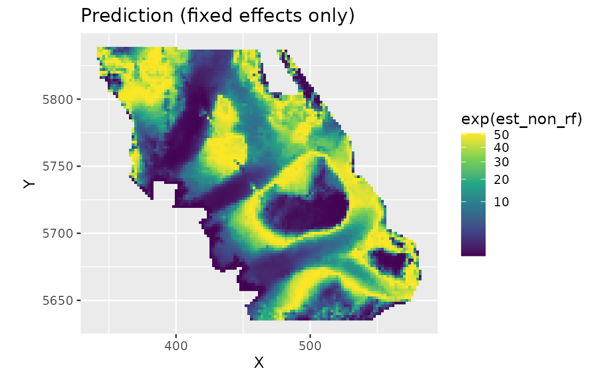
The spatial random field. These are persistent deviations from the depth effect: areas that are consistently higher (red) or lower (blue) than depth alone predicts. They represent spatially structured factors, such as habitat, that the model doesn’t include:
plot_map(predictions, omega_s) +
scale_fill_gradient2() +
ggtitle("Spatial random effects only")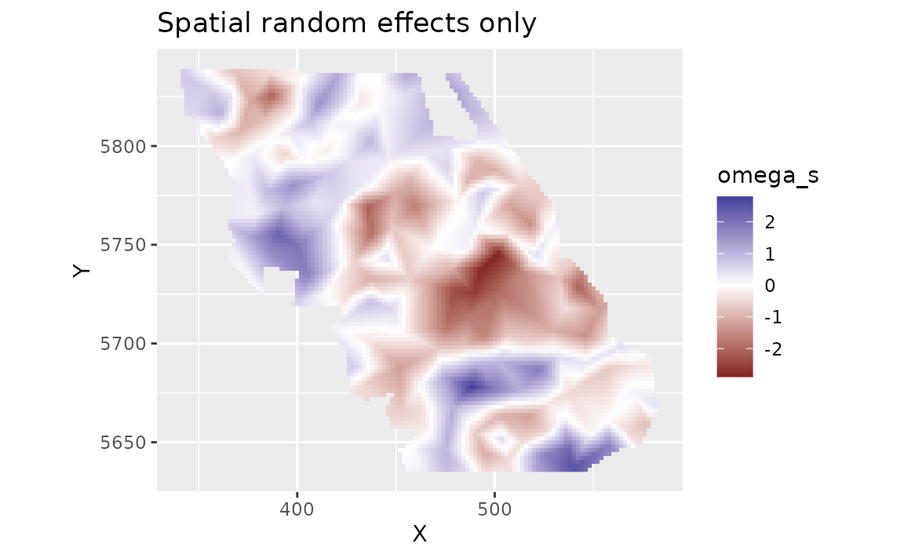
The spatiotemporal random fields. These are deviations that change from year to year, beyond the depth effect and the persistent spatial field:
plot_map(predictions, epsilon_st) +
scale_fill_gradient2() +
facet_wrap(~year) +
ggtitle("Spatiotemporal random effects only")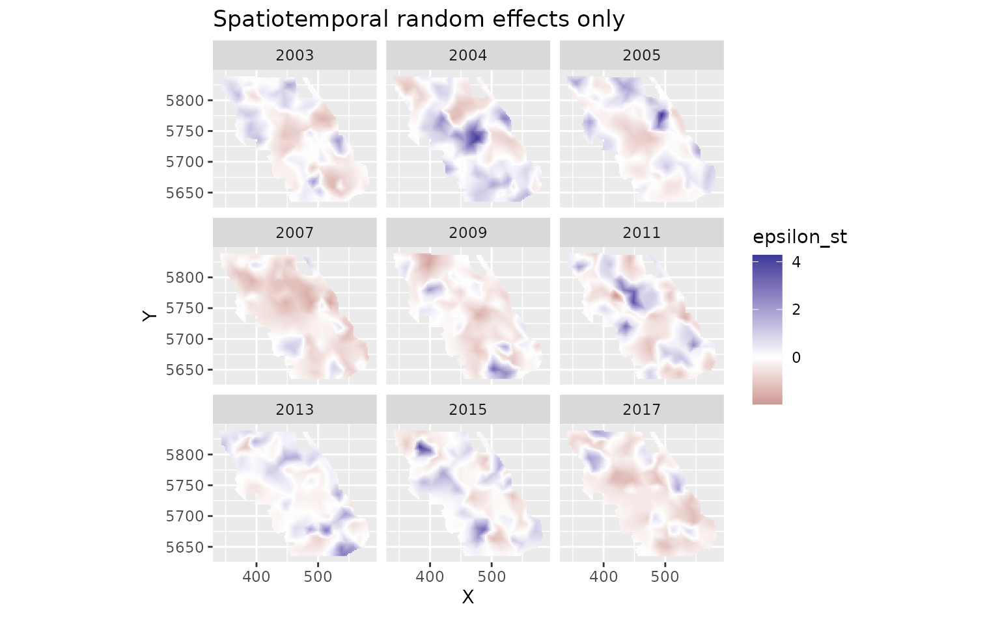
Uncertainty
To get uncertainty on the predictions, we can set nsim
in predict(). This draws many sets of values for the
parameters and random effects, consistent with their estimated
uncertainty and correlations, and makes a prediction for each draw.
(Technically, the draws come from a multivariate normal distribution
defined by the estimated values and the joint precision matrix,
the inverse of the covariance matrix, of all fixed and random effects.)
Here we take 100 draws and summarize them for each grid cell with
apply():
set.seed(1)
sim <- predict(m3, newdata = grid_yrs, nsim = 100)
sim_last <- sim[grid_yrs$year == max(grid_yrs$year), ] # just plot last year
pred_last <- predictions[predictions$year == max(grid_yrs$year), ]
pred_last$lwr <- apply(exp(sim_last), 1, quantile, probs = 0.025)
pred_last$upr <- apply(exp(sim_last), 1, quantile, probs = 0.975)
pred_last$sd <- apply(exp(sim_last), 1, sd)
pred_last$cv <- apply(exp(sim_last), 1, function(x) sd(x) / mean(x))The coefficient of variation (CV; SD divided by the mean) shows where the predictions are most uncertain relative to their size:
plot_map(pred_last, cv) +
scale_fill_viridis_c()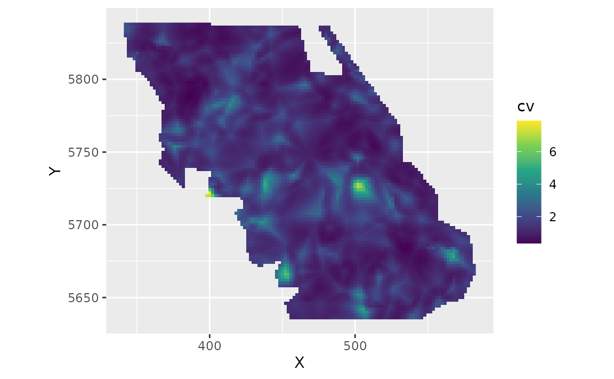
Plotting covariate effects
To see the effect of depth, we predict across a range of depths while
ignoring the random fields (re_form = NA). We make the
depths in meters and convert them to depth_scaled the same
way the data were prepared:
nd <- data.frame(depth = seq(min(pcod$depth), max(pcod$depth), length.out = 100))
nd$depth_scaled <- (log(nd$depth) - pcod$depth_mean[1]) / pcod$depth_sd[1]
nd$year <- 2015L # the year doesn't matter with re_form = NA here, but is required
p <- predict(m3, newdata = nd, se_fit = TRUE, re_form = NA)
ggplot(p, aes(depth, exp(est),
ymin = exp(est - 1.96 * est_se),
ymax = exp(est + 1.96 * est_se)
)) +
geom_line() +
geom_ribbon(alpha = 0.4) +
coord_cartesian(expand = FALSE) +
labs(x = "Depth (m)", y = "Biomass density (kg/km2)")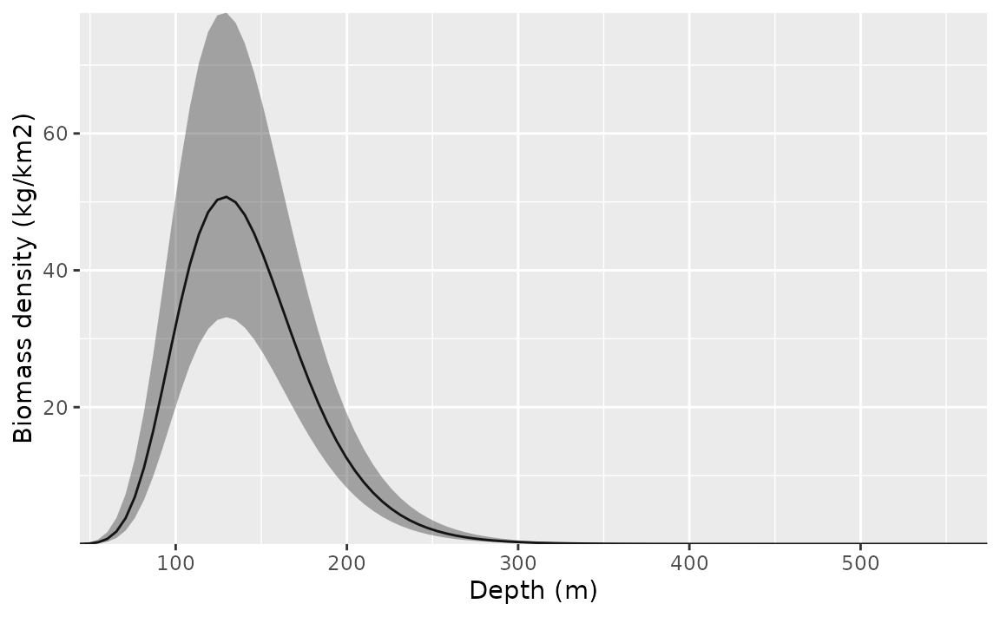
The ggeffects and visreg packages can make these plots for you. For example:
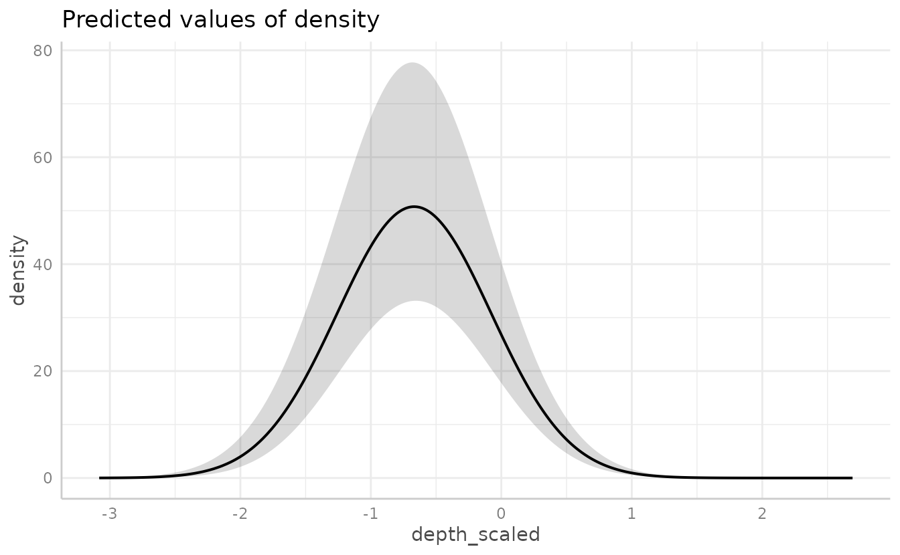
Recap and next steps
The steps we followed apply to most sdmTMB analyses:
- Look at the data and put coordinates in a projection with distances in meaningful units (e.g., UTMs in km).
- Make a mesh with
make_mesh(). - Fit models with
sdmTMB(), building up from simpler to more complex. - Run
sanity()on each model. - Check residuals.
- Interpret parameters with
tidy()and compare models (e.g., withAIC()orsdmTMB_cv()). - Predict on a grid with
predict()to make maps, and usensimfor uncertainty.
Where to go next:
- Index standardization: calculate total abundance or biomass over time from predictions.
- Residual checking: more on model checking.
- Cross-validation: compare models by how well they predict new data.
- Delta models: model presence and positive density separately.
- Spatial trend models: spatially varying coefficients.
- Forecasting: predict into future years.
Time-varying effects
Covariate effects can also change through time. Here, we let the
intercept and depth effects follow an AR1 process (each year’s values
correlated with the previous year’s) with
time_varying_type = "ar1". With "ar1", the
coefficients in the main formula are the average values, and the
time-varying process estimates each year’s deviation from them. We use
extra_time to include every year between the first and last
survey so the time steps are evenly spaced. To keep the example simple
and fast, we leave out the spatiotemporal fields. See
?sdmTMB for the other options for
time_varying_type.
m4 <- sdmTMB(
density ~ depth_scaled + I(depth_scaled^2),
data = pcod,
time_varying = ~ 1 + depth_scaled + I(depth_scaled^2),
time_varying_type = "ar1",
extra_time = 2003:2017,
mesh = mesh,
family = tweedie(link = "log"),
spatial = "on",
time = "year",
spatiotemporal = "off"
)
sanity(m4)
#> ✔ Non-linear minimizer suggests successful convergence
#> ✔ Hessian matrix is positive definite
#> ✔ No extreme or very small eigenvalues detected
#> ✔ No gradients with respect to fixed effects are >= 0.001
#> ✔ No fixed-effect standard errors are NA
#> ✔ No standard errors look unreasonably large
#> ✔ No sigma parameters are < 0.01
#> ✔ No sigma parameters are > 100
#> ✔ Range parameter doesn't look unreasonably large
m4
#> Spatial model fit by ML ['sdmTMB']
#> Formula: density ~ depth_scaled + I(depth_scaled^2)
#> Mesh: mesh (isotropic covariance)
#> Time column: year
#> Data: pcod
#> Family: tweedie(link = 'log')
#>
#> Conditional model:
#> coef.est coef.se
#> (Intercept) 3.84 0.28
#> depth_scaled -1.91 0.16
#> I(depth_scaled^2) -1.72 0.18
#>
#> Time-varying parameters:
#> coef.est coef.se
#> (Intercept)-2003 0.00 0.25
#> (Intercept)-2004 0.62 0.24
#> (Intercept)-2005 0.51 0.24
#> (Intercept)-2006 -0.08 0.49
#> (Intercept)-2007 -0.76 0.26
#> (Intercept)-2008 -0.46 0.63
#> (Intercept)-2009 -0.74 0.25
#> (Intercept)-2010 -0.09 0.49
#> (Intercept)-2011 0.44 0.24
#> (Intercept)-2012 0.16 0.51
#> (Intercept)-2013 0.08 0.24
#> (Intercept)-2014 0.13 0.50
#> (Intercept)-2015 0.35 0.24
#> (Intercept)-2016 0.05 0.49
#> (Intercept)-2017 -0.18 0.25
#> depth_scaled-2003 0.00 0.08
#> depth_scaled-2004 0.01 0.09
#> depth_scaled-2005 -0.02 0.10
#> depth_scaled-2006 0.00 0.10
#> depth_scaled-2007 -0.03 0.13
#> depth_scaled-2008 0.00 0.09
#> depth_scaled-2009 0.03 0.13
#> depth_scaled-2010 0.00 0.10
#> depth_scaled-2011 0.01 0.09
#> depth_scaled-2012 0.00 0.09
#> depth_scaled-2013 -0.01 0.08
#> depth_scaled-2014 0.00 0.10
#> depth_scaled-2015 0.06 0.23
#> depth_scaled-2016 0.00 0.09
#> depth_scaled-2017 -0.04 0.19
#> I(depth_scaled^2)-2003 -0.05 0.22
#> I(depth_scaled^2)-2004 -0.04 0.19
#> I(depth_scaled^2)-2005 -0.11 0.22
#> I(depth_scaled^2)-2006 0.00 0.42
#> I(depth_scaled^2)-2007 -0.02 0.24
#> I(depth_scaled^2)-2008 0.01 0.50
#> I(depth_scaled^2)-2009 0.69 0.19
#> I(depth_scaled^2)-2010 0.00 0.42
#> I(depth_scaled^2)-2011 -0.50 0.23
#> I(depth_scaled^2)-2012 0.00 0.42
#> I(depth_scaled^2)-2013 0.56 0.17
#> I(depth_scaled^2)-2014 0.00 0.46
#> I(depth_scaled^2)-2015 -0.06 0.23
#> I(depth_scaled^2)-2016 0.00 0.46
#> I(depth_scaled^2)-2017 -0.45 0.25
#> rho-(Intercept) 0.34 0.39
#> rho-depth_scaled 0.00 1.19
#> rho-I(depth_scaled^2) 0.01 0.40
#>
#> Dispersion parameter: 12.37
#> Tweedie p: 1.58
#> Matérn range: 15.41
#> Spatial SD: 1.75
#> ML criterion at convergence: 6361.987
#>
#> See ?tidy.sdmTMB to extract these values as a data frame.To plot the depth effect for each year, we predict for every combination of depth and year:
nd <- expand.grid(
depth = seq(50, 400, length.out = 50),
year = unique(pcod$year)
)
nd$depth_scaled <- (log(nd$depth) - pcod$depth_mean[1]) / pcod$depth_sd[1]
p <- predict(m4, newdata = nd, se_fit = TRUE, re_form = NA)
ggplot(p, aes(depth, exp(est),
ymin = exp(est - 1.96 * est_se),
ymax = exp(est + 1.96 * est_se),
group = as.factor(year)
)) +
geom_line(aes(colour = year), lwd = 1) +
geom_ribbon(aes(fill = year), alpha = 0.1) +
scale_colour_viridis_c() +
scale_fill_viridis_c() +
coord_cartesian(expand = FALSE) +
labs(x = "Depth (m)", y = "Biomass density (kg/km2)")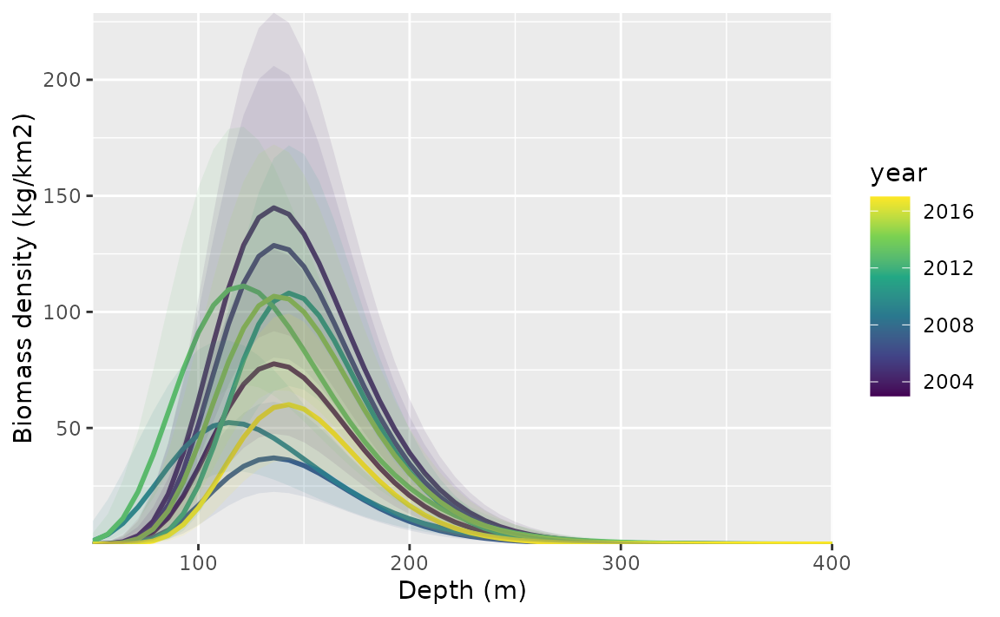